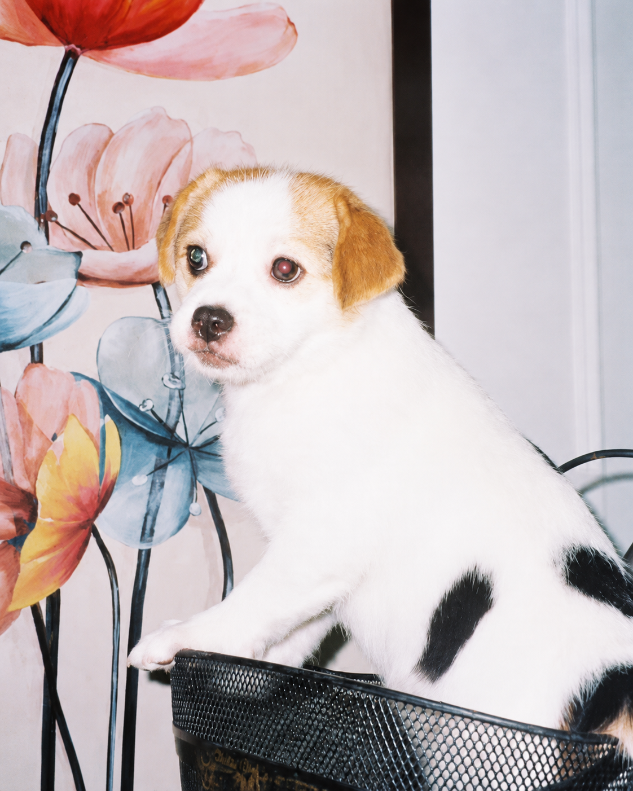

HELLO, WE'RE PAWS & CO.
Những điều nhỏ.
Một tình yêu lớn.
Có những thành viên trong gia đình không nói được lời yêu.
Nhưng luôn biết cách làm mỗi ngày của ta dịu dàng hơn.

YÊU THƯƠNG TRONG TỪNG ĐIỀU NHỎ
Một cửa hàng nhỏ,
một thế giới ấm áp.
PAWS & CO. bắt đầu từ một ý tưởng đơn giản: chăm sóc thú cưng nên là trải nghiệm nhẹ nhàng, rõ ràng và đầy quan tâm. Một bữa ăn vừa đủ, chiếc vòng cổ thoải mái, món đồ chơi đúng sở thích — những điều nhỏ ấy làm nên một cuộc sống tốt đẹp hơn.
Đây là thương hiệu giả lập dành cho portfolio frontend. Toàn bộ sản phẩm, đánh giá, tồn kho và giao dịch đều là dữ liệu minh họa. Không có hoạt động kinh doanh hoặc thanh toán thực tế.
Ghé cửa hàng demo ↗A LITTLE HELP
Bạn hỏi, PAWS trả lời.
Mọi điều bạn cần biết trước khi khám phá.
Đây có phải cửa hàng đang bán hàng thật?
Không. PAWS & CO. là dự án frontend portfolio. Sản phẩm, giá, đánh giá và mọi bước đặt hàng chỉ là minh họa, không tạo giao dịch thực tế.
Giỏ hàng có được giữ sau khi đóng trang không?
Có, nếu trình duyệt cho phép localStorage. Giỏ hàng và danh sách yêu thích được lưu trên chính trình duyệt bạn đang dùng. Nếu lưu trữ bị chặn, dữ liệu chỉ được giữ trong trang hiện tại.
Phí vận chuyển được tính như thế nào?
Trong demo, giao tiêu chuẩn phí 30.000 ₫ và miễn phí từ 599.000 ₫. Giao nhanh phí cố định 50.000 ₫. Không có đơn vị vận chuyển thực tế được kết nối.
Tôi có cần nhập thông tin thẻ hoặc mật khẩu không?
Không. Website không yêu cầu số thẻ, mật khẩu hoặc đăng nhập. Checkout chỉ minh họa biểu mẫu; thông tin liên hệ không được lưu hay gửi đến máy chủ.
Sản phẩm có giới hạn số lượng không?
Có. Mỗi biến thể có số lượng tồn kho mẫu. Bạn không thể thêm vào giỏ nhiều hơn số lượng sẵn có, kể cả khi sản phẩm đã tồn tại trong giỏ.
Có thể dùng khi không có Internet không?
Có. Ảnh, font, dữ liệu và mã nguồn được lưu cục bộ. Mở index.html hoặc chạy bằng Live Server. Trình duyệt có thể áp dụng quy tắc lưu trữ khác nhau với đường dẫn file; dùng Live Server cho trải nghiệm ổn định.